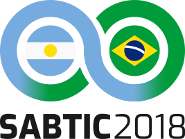

Valentín Costa
I'm a web developer at Kinexo based in Entre Ríos, Argentina.
Work experience
- Sep 2018 - Present · Web Developer
(C#, JS)
@ Kinexo S.A.
Education
- 2013 - Present · Information Systems Engineering (GPA: 7.97)
@ Universidad Tecnológica Nacional - Facultad Regional Concepción del Uruguay (UTN FRCU)
- 2013 - 2018 · Systems Analyst (GPA: 8.09)
@ Universidad Tecnológica Nacional - Facultad Regional Concepción del Uruguay (UTN FRCU)
- 2006 - 2012 · Electromechanical Technician (GPA: 8.37)
@ Escuela de Educación Tecnológica N° 2 "Pbro. José María Colombo"
- 2008 · Computer Repair Technician
@ Instituto Argentino de Computación
Projects
- Plan de Estudios
(Vue, Sass, Pug): Tool that helps Information Systems Engineering students to organize themselves to get their college degree.
- Plande
(Vue, Node.js, Express, MongoDB): Same as above but includes more degree courses and new features. It's not live yet.
- MozoVIP
(AngularJS, CodeIgniter, MariaDB): Integrated management system for restaurants, bars and coffee shops.
- Palatrainer
(Arduino): Paddling trainer for kayaking and rowing lovers.
- UTNator
(JS): UTN FRCU logo generator.
- GoNews
(C#, Entity Framework): Digital signage app that allows to create customizable advertising campaigns.
- LEOShell
(Pascal): Experimental Unix shell created for learning purposes.
Some freelance work
Activities
- I'm a member of Local Organizing Committee for the SABTIC 2018.
- I'm part of FRCU Dev, a group of developers from UTN FRCU.
- I was a student counselor and a motivational tutor at Information System Engineering Department.
- I was a student researcher (as a scholarship holder) in the Data Mining project at the Database Research Group of UTN FRCU.
- I gave a talk called "Making an app for the curriculum" at the II Jornada de Prácticas Supervisadas of UTN FRCU.
- Some of my classmates and I wrote a paper titled "Mobile app-oriented business and their implementation" for the CONAIISI 2016.
- I attended Escuela de Ciencias Informáticas (2016) in the UBA, Buenos Aires.
- I attended Campus Party Argentina #1 (2016) and #2 (2018) in Tecnópolis, Buenos Aires.
- I participated in a hackathon during the Global Entrepreneurship Week (2017) in Paraná, Entre Ríos.

Interests
- Web standards, usability, accessibility, user experience
- Design, branding (Photoshop, Inkscape, GIMP)
- Linux (my main OS), free and open-source software
- English language and culture
- Education, entrepreneurship and personal development
Personal info
- Date of birth: May 15, 1994 (24 years old)
- Place of birth: Gualeguaychú, Entre Ríos, Argentina
- Place of residence: Concepción del Uruguay, Entre Ríos, Argentina
- Address: 678 Juan D. Perón St., Apt. 1D
- Marital status: Single
- Children: None
- Phone: +54 (3446) 15576794
- Email: valentincostam@gmail.com